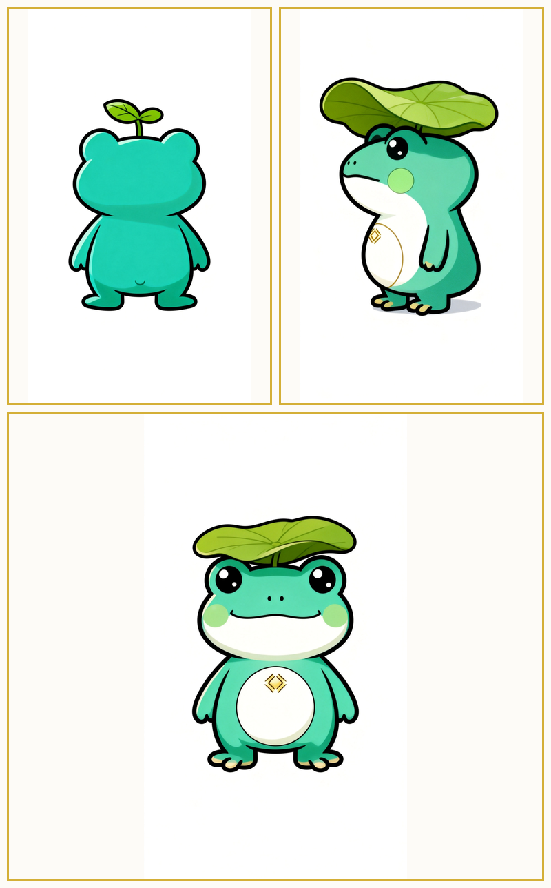
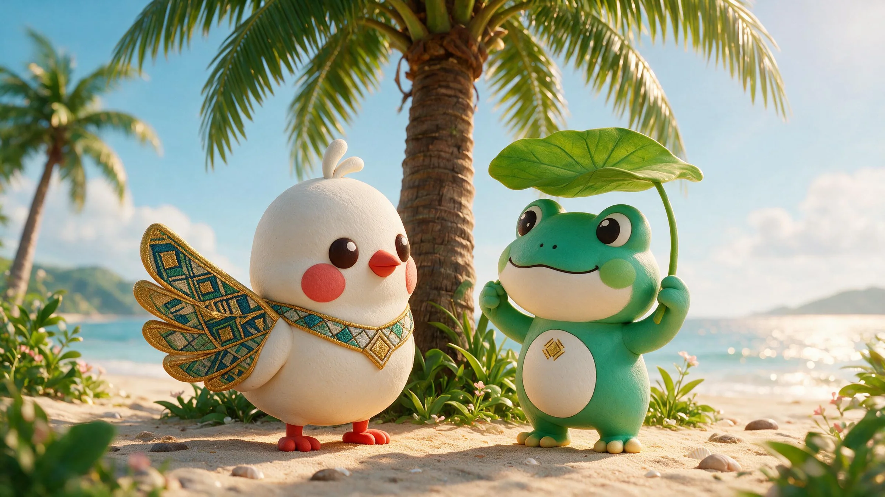

三视图3 Views
三视图3 Views甘米米 Ganmimi
文化信使 · 故事收藏家Culture Messenger
黎锦上最古老的两枚纹样Two of the oldest motifs in Li brocade
甘米米与呱噜噜，一只把故事带向世界，一只把世界织进家乡。甘米米以黎族传说「甘工鸟」中婀甘化身的银翼神鸟为原型；呱噜噜以黎锦蛙纹（蛙图腾）为原型——它们是黎锦上最古老的纹样，也是海南人对爱与家园最深的执念。下面从原型、性格、起源三个角度认识这对出海双人组。Ganmimi and Gualulu — one carries stories to the world, the other weaves the world back home. Ganmimi is born from Egan, the silver-winged sacred bird of the Li legend; Gualulu springs from the frog motif (frog totem) in Li brocade — two of the oldest motifs, and Hainan's deepest emblems of love and home. Meet the duo through their prototypes, personalities and origins.
三视图3 Views文化信使 · 故事收藏家Culture Messenger

三视图3 Views雨林守护者 · 家园守望者Rainforest Guardian

基于双 IP 定稿三视图生成的 3D 建模（500k 面）。拖拽旋转、滚轮缩放，随时复位——也可以去「IP 产品」把它们带回家。Generated from the duo's final three-view sheets (500k faces). Drag to rotate, scroll to zoom, reset anytime — or take them home in the IP Store.
在黎族民间传说里，甘工鸟是两只鸟：黎家姑娘婀甘与青年猎手拜和相爱，遭恶霸峒主强抢。婀甘把银首饰捣成银翅膀化鸟飞去，拜和也化鸟相随，从此比翼齐飞，昼夜啼鸣「甘工！甘工！」。甘米米以婀甘为原型——她是那只带着银翅膀与黎锦织带的神鸟，决定飞出海南，把家乡的 1001 个故事讲给世界听；拜和化身的另一只鸟，始终留在故事与黎锦「双鸟并飞」的纹样里。
呱噜噜则来自黎锦蛙纹：在黎族文化里，蛙是守护稻田、预告丰年的灵物，蛙纹世代相传，象征繁衍与家园兴旺。他留守工坊，替甘米米守好家乡——「你讲给世界听，我织给家乡看。」
In the Li legend, the Gan Gong Bird is two birds: the girl Egan and the hunter Baihe fell in love, until a cruel chieftain tore them apart. Egan pounded her silver ornaments into silver wings and flew away as a bird; Baihe became a bird too and followed — two birds, wing to wing, crying "Gan-gong! Gan-gong!" Ganmimi is born from Egan: the sacred bird of silver wings and brocade bands, flying out of Hainan to share 1001 stories with the world, while the other bird from Baihe stays in the story and in the two-birds motif.
Gualulu comes from the frog motif of Li brocade: in Li culture, the frog guards the rice paddies and foretells a good harvest, and its motif passes down the wish for fertility and a thriving home. He stays by the loom for Ganmimi — "You tell the world; I weave it into home."